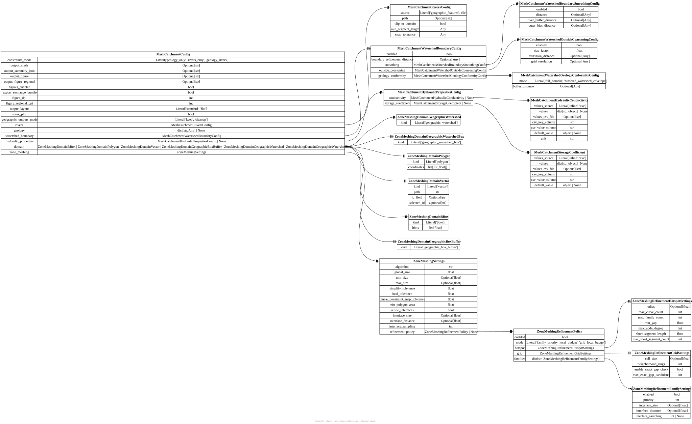

[mesh_catchment] MeshCatchmentConfig#
TOML section: [mesh_catchment]
Pydantic model: MeshCatchmentConfig defined in hydromodpy.spatial.mesh.config.main.
Top-level launcher contract for one mono-catchment meshing run.
Fields#
constraints_mode
Literal[‘geology_only’, ‘rivers_only’, ‘geology_rivers’] default = “geology_rivers” user source
Meshing compliance target. ‘geology_only’ conforms the mesh to geology interfaces only, ‘rivers_only’ conforms the mesh to river traces only, and ‘geology_rivers’ enforces both sets of constraints in one mesh.
output_mesh
Optional[str] default = None dev source
Optional .msh output path for the generated planar mesh. When omitted, the launcher writes the mesh to .hmp/scratch/_preprocessing/mesh/mesh_catchment.msh inside the active catchment workspace in standard layout, or directly to workspace.project_root/mesh_catchment.msh when output_layout=’flat’ is used.
output_summary_json
Optional[str] default = None dev source
Optional JSON sidecar path for QA metrics, cleaned-input diagnostics, and summary metadata describing the generated mesh. When omitted, the launcher writes it next to the default mesh output.
output_figure
Optional[str] default = None dev source
Optional overview figure path. Use it when you want a quick visual QA artifact showing the support domain, geology zones, river constraints, and final mesh footprint.
output_figure_regional
Optional[str] default = None dev source
Optional regional overview figure path. When omitted but output_figure is set, the launcher writes a second figure next to the main one with suffix _regional to show where the catchment sits on the full DEM.
figures_enabled
bool default = True user source
If true, generate the overview figure artifacts when figure output paths are configured. Set it to false to skip figure creation entirely, even in batch mode where default filename patterns are present.
export_exchange_bundle
bool default = True user source
If true, export the solver-exchange mesh bundle next to the generated mesh. Set it to false for profiling or mesh-only runs that do not need bundle metadata. Downstream solvers that require runtime mesh support may fail without this bundle.
cache
bool default = False user source
If true, reuse a previously generated mesh when its inputs (domain geometry, river constraint, lake/dam refinement, mesh and delineation configuration) are unchanged, instead of regenerating it. Gmsh is not reproducible run to run (it reseeds from the system clock), so regeneration yields a different mesh and makes results and calibration objectives irreproducible; caching pins the mesh. Default off (regenerate every run). See hydromodpy.spatial.mesh.mesh_cache.
figure_dpi
int default = 300 user source
Pixel density used when rendering the main mesh overview figure. Increase it when you need to inspect mesh edges and constraints more closely in the saved PNG.
figure_regional_dpi
int default = 220 user source
Pixel density used when rendering the regional overview figure. Keep it lower than figure_dpi when you want detailed local mesh inspection without making the regional PNG too heavy.
output_layout
Literal[‘standard’, ‘flat’] default = “standard” user source
Dedicated-launcher output layout. Use ‘standard’ to keep final mesh artifacts under .hmp/scratch/_preprocessing/mesh/, or ‘flat’ to write final mesh artifacts directly under workspace.project_root while keeping intermediate runtime folders out of that final directory.
show_plot
bool default = False user source
If true, open the generated overview figure interactively at the end of the run. Keep it false for batch or headless execution.
geographic_outputs_mode
Literal[‘keep’, ‘cleanup’] default = “keep” dev source
Control what happens to intermediate geographic preprocessing artifacts after the mesh run. Use ‘keep’ to preserve the canonical .hmp/scratch/_preprocessing/geographic and .hmp/scratch/_preprocessing/demcorrecflow folders, or ‘cleanup’ to delete them at the end of the dedicated mesh launcher once the mesh outputs and exchange bundle have been written.
rivers
in TOML:
[mesh_catchment.rivers]
MeshCatchmentRiversConfig factory user source
River-constraint section used when constraints_mode includes rivers. The default behavior is to reuse the in-memory river trace already built by the geographic pipeline.
geology
in TOML:
[mesh_catchment.geology.<id>]
dict[str, Any] | None default = None user source
Optional geology support used when constraints_mode includes geology. This section defines which polygon source represents lithological zones and how those polygons should be interpreted before conformal meshing. Validated through the geology data-source Protocol; stored as a normalized mapping.
watershed_boundary
in TOML:
[mesh_catchment.watershed_boundary]
MeshCatchmentWatershedBoundaryConfig factory user source
Optional watershed-boundary mesh constraint. Enable it to force a conformal mesh line along the catchment boundary while keeping the geology zonation represented on the whole support domain.
hydraulic_properties
in TOML:
[mesh_catchment.hydraulic_properties]
MeshCatchmentHydraulicPropertiesConfig | None default = None user source
Optional hydraulic-property tables keyed by geology zones. The launcher projects geology on the mesh and exports per-cell conductivity/storage values as weighted averages of geology fractions.
domain
in TOML:
[mesh_catchment.domain]
kind = “bbox” | “polygon” | “vector” | “geographic_box_buffer” | “geographic_watershed” | “geographic_watershed_box” factory user source
Effective support domain to mesh. The default geographic_box_buffer mode reuses the catchment bounding box plus geographic buffer prepared during delineation, which is usually the right support for mono-catchment meshing.
Pick a tab below: setting
kindselects the matching schema.
TOML: [mesh_catchment.domain] with kind = "bbox" – model ZoneMeshingDomainBBox.
bbox
list[float] required user source
TOML: [mesh_catchment.domain] with kind = "polygon" – model ZoneMeshingDomainPolygon.
coordinates
list[list[float]] required user source
TOML: [mesh_catchment.domain] with kind = "vector" – model ZoneMeshingDomainVector.
path
str required user source
id_field
Optional[str] default = None user source
Optional vector attribute field name used to filter features.
selected_id
Optional[str] default = None user source
Optional value of id_field that selects a single feature in the vector source.
TOML: [mesh_catchment.domain] with kind = "geographic_box_buffer" – model ZoneMeshingDomainGeographicBoxBuffer.
TOML: [mesh_catchment.domain] with kind = "geographic_watershed" – model ZoneMeshingDomainGeographicWatershed.
TOML: [mesh_catchment.domain] with kind = "geographic_watershed_box" – model ZoneMeshingDomainGeographicWatershedBox.
zone_meshing
in TOML:
[mesh_catchment.zone_meshing]
ZoneMeshingSettings factory dev source
Low-level Gmsh sizing and cleanup parameters controlling cell size, simplification, and interface refinement. Defaults are valid, but project examples typically override them to target a desired number of cells.
lake_refinement
in TOML:
[mesh_catchment.lake_refinement]
LakeRefinementConfig factory user source
Optional local refinement on the lake shoreline band and the hydraulic structures (cutoff wall, sill, dam outlet). Disabled by default; set enabled = true to add the lake size fields.
refinement_zone
in TOML:
[[mesh_catchment.refinement_zone]]
list[RefinementZoneConfig] factory user source
User-provided zones of interest for local refinement. Each entry names one vector layer (polygons = zones, points / lines = corridors) and a target cell size; declare entries as [[mesh_catchment.refinement_zone]] tables.
Starter TOML snippet#
Entity-relationship diagram#
{kind=link}

Click to zoom and pan. Press Esc or click outside to close.